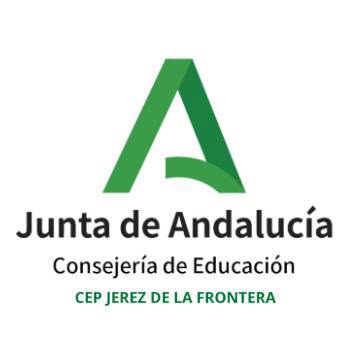

Saltar al contenido
☰
Menú
Inicio
Maqueen Plus
Sensores TA647
Proyectos
🤖
RoboMisión
LAB

¿Qué quieres hacer?
Elige una sección para empezar directamente.
01 · PRIMEROS PASOS
Empieza por aquí
Inicio
Portada de RoboMisión LAB
Cómo empezar
Prepara la micro:bit y MakeCode
KITs
Conoce Maqueen Plus y ACEBOTT TA647
02 · TUS EQUIPOS
Practica con tus KITs
Maqueen Plus
16 misiones con el robot
Componentes TA647
Fotografías de los 26 módulos
Actividades con sensores
156 retos y conexiones paso a paso
Conexiones Shield
Aprende a usar los cables Dupont
03 · APRENDE HACIENDO
Misiones y proyectos
72 misiones
Actividades de programación por niveles
12 proyectos STEAM
Guías completas para el taller
04 · RECURSOS
Ayuda y profesorado
Mi progreso
Misiones completadas e insignias
Zona docente
Planificación, rúbricas y fichas
Seguridad
Alimentación, pines y precauciones
Glosario
Explicación de los términos técnicos
También puedes consultar:
Ruta de aprendizaje ↗
Fuentes y licencias ↗
¿No aparecen los bloques? Comprueba el renderizador MakeCode ↗
MakeCode en español:
si el editor o los bloques aparecen en inglés, abre
⚙ Configuración → Lenguaje → Español
. Los nombres JavaScript se mantienen sin traducir para conservar el funcionamiento del programa.